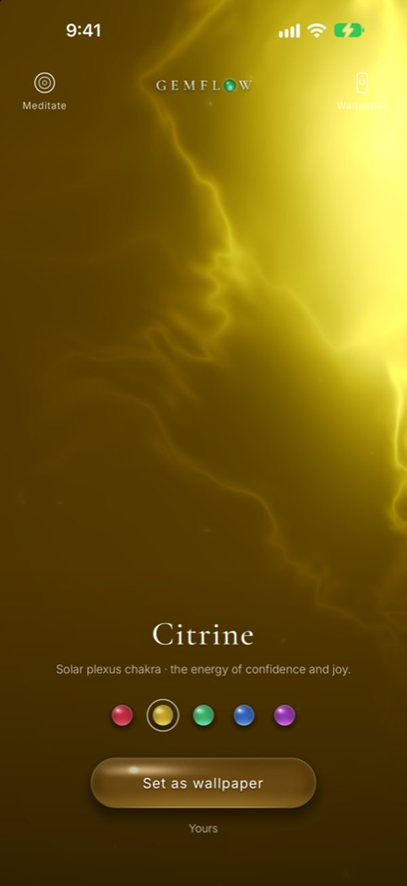

Frequencies · 528 Hz
528 Hz: what it is, and what we actually know
528 Hz is a sound that vibrates 528 times a second, a little above the C over middle C. It is the most famous of the “Solfeggio frequencies”, often called the love frequency. Its fame comes from a 1999 book rather than medieval music, and the research behind it is one small study. Below: the history, the study, safety, and how to listen.
The six Solfeggio frequencies
The full list of nine, with where each came from: Solfeggio frequencies explained.
| Hz | Syllable* | Gemflow stone |
|---|---|---|
| 396 | Ut | Ruby · root |
| 417 | Re | — |
| 528 | Mi | Citrine · solar plexus |
| 639 | Fa | Emerald · heart |
| 741 | Sol | Sapphire · throat |
| 852 | La | — |
| 963 | later | Amethyst · crown |
* Syllables as assigned by Horowitz (1999). 963 Hz was added to the list later.
The basics
What is 528 Hz?
528 Hz means 528 vibrations per second. In today’s standard tuning, where the A above middle C is 440 Hz, the nearest note is the C above middle C at 523.25 Hz. 528 Hz sits about 16 cents (a sixth of a semitone) higher. It becomes exactly that C if you tune A to 444 Hz instead of 440, which is how musicians make “528 Hz music”.
The history
Where did 528 Hz come from?
The six “Solfeggio frequencies” (396, 417, 528, 639, 741 and 852 Hz) were made famous by Leonard Horowitz’s book Healing Codes for the Biological Apocalypse (1999). According to Horowitz, the herbalist Joseph Puleo found the numbers hidden in the verse numbers of the Book of Numbers, chapter 7, from verse 12. Horowitz tied them to the syllables Ut, Re, Mi, Fa, Sol, La from the medieval hymn Ut queant laxis, which Guido of Arezzo used to teach singing around 1025. That is how 528 became “Mi”.
The catch
Is it really an ancient tone?
Guido’s syllables name the steps of a scale, not fixed frequencies: pitch was not measured in hertz until the 19th century. So the hymn is real and old, but the numbers attached to it come from the 1990s. Later lists added three more (174, 285 and 963 Hz) to make nine.
The research
Does 528 Hz do anything?
The study most often cited is Akimoto and colleagues (2018). Nine healthy adults listened to five minutes of soothing piano music tuned to 528 Hz on one day and to standard 440 Hz on another. After the 528 Hz music, the stress hormone cortisol in their saliva fell, oxytocin rose, and they reported less tension. After the 440 Hz music, the saliva markers did not change. The authors themselves note that the sample was small. We found no larger study that repeated it, so treat 528 Hz as a pleasant way to relax, not a treatment.
Source: Akimoto K, Hu A, Yamaguchi T, Kobayashi H. Effect of 528 Hz Music on the Endocrine System and Autonomic Nervous System. Health, 10(9), 1159–1170 (2018)
The big claim
Does 528 Hz repair DNA?
This claim comes from Horowitz’s writing, not from a lab. We found no peer-reviewed study showing that sound at 528 Hz repairs human DNA.
Safety
Is 528 Hz dangerous?
No more than any other sound. A 528 Hz tone is an ordinary audible note, and the only real risk is volume. The WHO and ITU safe-listening standard suggests keeping personal audio around 80 decibels or lower, for no more than 40 hours a week. Keep it soft enough that you could talk over it.
Source: WHO–ITU, Global standard for safe listening devices and systems (H.870, 2019)
How to listen
What does 528 Hz sound like?
A steady, fairly high tone, like a soft whistle a little above the C over middle C. On its own it can feel thin, so most people listen to it under music: tuned piano, singing bowls, or nature sounds. Ten minutes with your eyes closed is plenty.
528 Hz in Gemflow
Citrine: the 528 Hz stone

Citrine in the Gemflow app. The light is rendered live, not a video.
Gemflow turns your phone into a living crystal. Each stone has its own Solfeggio tone, and citrine’s is 528 Hz: a warm golden light you can touch and guide, and a Meditate mode where the 528 Hz tone sits quietly beneath guqin and real singing bowls while the stone breathes with you. It is for relaxation, not a medical product.
Questions
What is 528 Hz?
A sound that vibrates 528 times a second, slightly above the C over middle C. It is the most popular of the Solfeggio frequencies.
What note is 528 Hz?
Close to C5. In standard tuning (A = 440 Hz) C5 is 523.25 Hz, so 528 Hz is about 16 cents sharp. With A tuned to 444 Hz, C5 is exactly 528 Hz.
Why is 528 Hz called the love frequency?
The name comes from Leonard Horowitz’s books, starting with Healing Codes for the Biological Apocalypse (1999). It is a label, not a scientific finding.
Is 528 Hz dangerous?
No more than any other sound. Keep the volume comfortable; the WHO–ITU safe-listening standard suggests around 80 decibels or lower.
Does 528 Hz repair DNA?
We found no peer-reviewed evidence that it does. One small 2018 study (nine adults) found lower cortisol after five minutes of 528 Hz music.
Which crystal goes with 528 Hz?
In Gemflow, 528 Hz belongs to citrine, the yellow stone of the solar plexus chakra.
Sources
- Leonard G. Horowitz, Healing Codes for the Biological Apocalypse (Tetrahedron, 1999).
- Akimoto K, Hu A, Yamaguchi T, Kobayashi H. Effect of 528 Hz Music on the Endocrine System and Autonomic Nervous System. Health 10(9), 1159–1170 (2018).
- WHO–ITU, Global standard for safe listening devices and systems, ITU-T H.870 (2019).
© 2026 Gemflow · Home · Solfeggio frequencies · 528 Hz · Chakra stones and frequencies · 396 Hz Ruby · 528 Hz Citrine · 639 Hz Emerald · 741 Hz Sapphire · 963 Hz Amethyst · Privacy